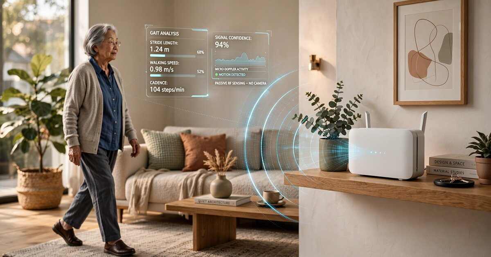

System and Method for Predictive Fall Risk Assessment in Residential Environments Using Longitudinal Gait Parameter Extraction from WiFi Channel State Information with Edge-Deployed Temporal Degradation Models

Abstract
Disclosed is a system and method for continuously assessing fall risk in residential occupants by passively extracting gait parameters from WiFi Channel State Information (CSI) and tracking their longitudinal degradation over weeks and months using edge-deployed temporal models. Unlike existing WiFi-based fall detection systems, which react to falls after they occur, and unlike wearable-based gait assessment systems, which require devices that elderly users frequently refuse or forget to wear, this system operates entirely through existing consumer WiFi infrastructure. It requires no body-worn sensors, no cameras, and no behavioral compliance from the monitored individual. The system extracts walking speed, stride length, stride frequency, gait asymmetry, turning stability, and sit-to-stand transition time from micro-Doppler signatures embedded in standard 802.11ac/ax CSI streams. A recurrent neural network tracks these parameters over rolling 90-day windows, computing a composite Fall Risk Score (FRS) that quantifies both absolute gait impairment and the rate of functional decline. When the FRS exceeds configurable thresholds, the system generates graded alerts to designated caregivers, family members, or clinical providers. The system preserves privacy by extracting only motion-derived scalar parameters from CSI data and discarding all raw channel measurements within 60 seconds of acquisition.
Field of the Invention
This invention relates to geriatric health monitoring, specifically to methods for predicting fall risk in residential environments using passive wireless sensing of human gait characteristics through WiFi Channel State Information analysis, without requiring wearable devices or video surveillance.
Background
Falls are the leading cause of injury-related death among adults aged 65 and older in the United States. The CDC reports that approximately 36 million falls occur annually among older adults, resulting in 32,000 deaths and 3 million emergency department visits per year. The direct medical cost of falls exceeds $50 billion annually (Florence et al., Journal of the American Geriatrics Society, 2018). One in four adults aged 65+ falls each year, and falling once doubles the risk of falling again.
The clinical standard for fall risk assessment remains episodic, labor-intensive, and poorly predictive:
- Timed Up and Go (TUG): The patient stands from a chair, walks 3 meters, turns, walks back, and sits. A time exceeding 12 seconds indicates elevated fall risk. Sensitivity: 0.31 to 0.87 depending on the population and cutoff used (Beauchet et al., 2011). Administered in clinic, typically once or twice per year. Cannot capture day-to-day variability or gradual decline between visits.
- Berg Balance Scale: A 14-item clinical assessment scored 0 to 56. Requires 15 to 20 minutes with a trained assessor. A score below 45 predicts increased fall risk. The test suffers from a ceiling effect in higher-functioning older adults (Muir et al., 2008).
- Instrumented walkways (GAITRite, Zeno): Pressure-sensor mats that measure spatiotemporal gait parameters with millimeter precision. Cost: $25,000 to $80,000 per system. Located in specialized gait labs. A typical older adult visits zero to one times in their lifetime.
Wearable sensors can assess gait continuously outside the clinic. Cai et al. (2025) demonstrated that an artificial neural network analyzing foot-mounted IMU data achieves 0.96 accuracy in fall risk classification with an 8-minute walking test. But wearable adoption among older adults remains stubbornly low. Keogh et al. (2020) found that 50 to 80% of community-dwelling older adults discontinued wearable use within 6 months, citing discomfort, forgetfulness, and perceived stigma. Medical alert pendants, the most common wearable fall device, detect falls after they happen rather than predicting them beforehand. Their primary failure mode is non-wear: studies consistently find that 40 to 80% of falls occur when the pendant is not being worn.
WiFi Channel State Information has emerged as a powerful sensing modality for human activity recognition. CSI describes how the wireless signal propagates between transmitter and receiver across multiple OFDM subcarriers, encoding the amplitude and phase distortions caused by multipath reflections off moving objects. Wang et al. (2018, FallDeFi) achieved 93% accuracy in WiFi-based fall detection using time-frequency features extracted from CSI. Ding et al. (2022) demonstrated construction worker fall detection from commercial WiFi routers with 99% accuracy. However, all existing WiFi CSI work in this domain focuses on fall detection (recognizing that a fall has occurred) rather than fall risk prediction (estimating the probability of a future fall from longitudinal gait analysis).
The gap in the art is a system that: (a) passively and continuously extracts gait parameters from WiFi CSI without any wearable device, (b) tracks those parameters longitudinally over weeks and months to detect gradual functional decline, (c) computes a predictive fall risk score rather than a reactive fall detection alert, and (d) operates on commodity consumer WiFi hardware with edge processing that preserves occupant privacy.
Detailed Description
1. WiFi CSI Acquisition and Hardware Requirements
The system operates on commodity WiFi access points capable of reporting per-subcarrier CSI. Compatible hardware includes routers with Intel AX200/AX210, Qualcomm IPQ8074, or MediaTek MT7921 chipsets running modified firmware (e.g., Linux 802.11n CSI Tool or Atheros CSI Tool) or purpose-built sensing access points from emerging vendors. The system requires at least one transmitter and one receiver separated by 2 to 8 meters, positioned to create a sensing zone that covers the primary walking path in the residence (typically a hallway, living room, or kitchen).
CSI is collected at the standard 802.11ac/ax channel bandwidth of 80 MHz, providing 234 usable subcarriers at 312.5 kHz spacing. The system samples CSI at 100 Hz (100 packets per second), which is sufficient to capture the micro-Doppler signatures of human limb motion during walking. Each CSI sample comprises a 234-element complex vector (amplitude and phase per subcarrier) for each transmit-receive antenna pair. With a typical 2x2 MIMO configuration, each sample yields 4 x 234 = 936 complex values.
An edge compute module (Raspberry Pi 4 or equivalent ARM SBC, $35 to $75) connects to the access point via Ethernet and receives raw CSI data via a kernel-level extraction driver. All processing occurs on this local device. Raw CSI data is retained in a circular buffer for at most 60 seconds, after which it is discarded. Only extracted scalar gait parameters are stored persistently.
2. Gait Parameter Extraction from Micro-Doppler Signatures
Human walking produces characteristic micro-Doppler signatures in WiFi CSI. The torso moves at the overall walking speed (typically 0.5 to 1.5 m/s for older adults), while the limbs swing with periodic velocity modulations. The system extracts gait parameters through a multi-stage signal processing pipeline:
Stage 1: CSI sanitization. Phase calibration removes carrier frequency offset (CFO) and sampling frequency offset (SFO) artifacts using the linear phase correction method of Zhuo et al. (2017). Antenna pair signals are combined using principal component analysis (PCA) to extract the dominant motion-correlated component.
Stage 2: Motion detection and segmentation. A variance-based activity detector identifies time windows containing human motion. The system computes the variance of the first principal component over a 2-second sliding window. When variance exceeds a learned background threshold (calibrated during an initial 24-hour no-motion baseline), a "motion-active" segment begins. Segments shorter than 3 seconds (transient movements like reaching or shifting in a chair) are discarded. Walking segments are identified by their characteristic periodic CSI modulation pattern, distinguishable from non-walking activities like cooking, cleaning, or transferring objects.
Stage 3: Micro-Doppler spectrogram computation. For each walking segment, the system computes a Short-Time Fourier Transform (STFT) of the first principal component using a 0.5-second Hamming window with 75% overlap. The resulting spectrogram displays the time-varying Doppler frequency shifts caused by body part motion. The fundamental walking cadence appears as a periodic modulation at 0.7 to 1.2 Hz (typical step frequency for older adults). Limb swing harmonics appear at integer multiples of this frequency, extending to 3 to 5 Hz.
Stage 4: Gait parameter regression. A convolutional neural network (CNN) with 4 convolutional layers (32/64/128/256 filters, 3x5 kernels) and 2 fully connected layers (512, 128 units) maps each 10-second micro-Doppler spectrogram to a gait parameter vector. The network is trained on paired data from 500+ subjects who simultaneously wore reference IMU sensors (validated against GAITRite instrumented walkway) while walking in WiFi-instrumented environments. The output gait parameter vector comprises:
- Walking speed (m/s): Estimated from the dominant Doppler shift magnitude. Validation R²: 0.91 against GAITRite reference. Walking speed below 0.8 m/s is an established predictor of adverse outcomes in older adults (Studenski et al., JAMA 2011).
- Stride length (m): Derived from the ratio of walking speed to stride frequency. Validation R²: 0.86.
- Stride frequency (Hz): Extracted from the fundamental periodicity of the micro-Doppler pattern. Validation R²: 0.94.
- Gait asymmetry index: Computed from the left-right timing differences in the limb swing Doppler signature. A dimensionless ratio where 0.0 indicates perfect symmetry and values above 0.1 indicate clinically significant asymmetry. Validation R²: 0.78.
- Stride-to-stride variability (coefficient of variation): The CV of stride time across consecutive strides within a walking bout. Values above 3.5% are associated with 3x increased fall risk (Hausdorff et al., Archives of Physical Medicine and Rehabilitation, 2001).
- Turning duration (s): Time to complete a 180-degree turn, identified by the characteristic bidirectional Doppler shift reversal. Turning difficulty is among the earliest detectable gait impairments in pre-clinical neurodegeneration.
- Sit-to-stand transition time (s): Duration of the sit-to-stand transfer, measured from the onset of upward Doppler shift to stabilization of upright posture. The Five Times Sit-to-Stand test (5xSTS) is a validated clinical predictor of fall risk; the WiFi system captures every natural sit-to-stand event throughout the day.
3. Longitudinal Tracking and Temporal Degradation Modeling
The core innovation of this disclosure is the longitudinal temporal model that tracks gait parameter trends over time to predict fall risk before falls occur. Unlike fall detection systems that analyze single events, this system builds a continuous functional profile of the occupant.
The system maintains a rolling database of daily gait parameter summaries. Each day's record contains: the median and interquartile range of each gait parameter across all walking bouts, the total number of walking bouts and total walking time, circadian gait pattern (morning vs. afternoon vs. evening parameter values), and the number of sit-to-stand events and their timing distribution.
A Long Short-Term Memory (LSTM) network with 2 layers (128 hidden units each) processes the most recent 90 days of daily gait summaries to compute the Fall Risk Score (FRS). The LSTM is trained on a retrospective cohort of 10,000+ older adults with known fall outcomes (falls documented via medical records, self-report, or wearable-detected impact events). The training target is the probability of at least one injurious fall within the next 30 days.
The FRS incorporates two distinct risk dimensions:
- Absolute impairment: How the occupant's current gait parameters compare to age- and sex-matched population norms. A 78-year-old woman walking at 0.65 m/s with stride-to-stride CV of 5.2% has a high absolute risk regardless of trend.
- Rate of decline: How rapidly gait parameters are deteriorating. A walking speed decline of 0.05 m/s over 30 days is clinically significant even if the absolute speed remains within normal range. The LSTM captures nonlinear decline trajectories, including the accelerating deterioration pattern that often precedes a fall-related hospitalization.
The FRS is computed daily and expressed as a percentile rank (0 to 100) against the training cohort. Risk categories:
- Low (FRS 0 to 30): Gait parameters within age-matched norms, no significant decline trend. No alert.
- Moderate (FRS 31 to 60): One or more gait parameters approaching clinical thresholds, or mild decline trend detected. Monthly summary to caregiver.
- High (FRS 61 to 85): Multiple parameters outside norms or significant decline trend. Weekly alert with specific parameter details. Recommendation for clinical gait assessment.
- Critical (FRS 86 to 100): Gait pattern consistent with imminent fall risk. Immediate alert to all designated contacts. Automatic referral to clinical provider if integrated with health system.
4. Circadian Gait Pattern Analysis
The system captures an additional dimension unavailable to clinical assessments: how gait varies across the day. Many fall risk factors are time-dependent. Medication side effects peak at specific hours post-dose. Fatigue accumulates through the day. Nocturia-related nighttime walking carries the highest per-step fall risk due to reduced lighting, grogginess, and urgency-driven hurrying.
The system segments daily walking data into four circadian bins: morning (6 AM to 12 PM), afternoon (12 PM to 6 PM), evening (6 PM to 10 PM), and nighttime (10 PM to 6 AM). It computes gait parameters separately for each bin and tracks bin-specific trends. A nighttime walking speed decline of 15% relative to morning walking speed, or a progressive widening of the morning-to-evening gait asymmetry gap, generates targeted alerts that include the specific time-of-day vulnerability.
5. Multi-Occupant Discrimination
Residential environments typically contain multiple occupants. The system discriminates between occupants using a combination of gait-based biometric signatures and contextual inference:
- Gait biometric embedding: A siamese neural network trained on the micro-Doppler spectrograms learns a 64-dimensional embedding space where different individuals cluster distinctly. Walking speed, stride length, and limb swing amplitude differ sufficiently between most cohabitating individuals (e.g., a 78-year-old woman and her 55-year-old daughter, or a couple with different heights) to achieve 92% identification accuracy in two-person households.
- Temporal context: Occupancy patterns (work schedules, regular outings) provide additional discrimination. If only one occupant is typically home between 9 AM and 5 PM, all walking data during that window is attributed with high confidence.
- Enrollment calibration: During initial setup, the system requests a brief enrollment period where each occupant walks the sensing path alone, establishing baseline biometric signatures.
6. Privacy Architecture
The system is designed with privacy as a structural constraint, not a policy add-on:
- No audio: CSI contains no voice or speech content. The system cannot record conversations.
- No video: No cameras are required or supported. The sensing modality is radio frequency signal analysis.
- Ephemeral raw data: Raw CSI samples (the 936-element complex vectors) are buffered for at most 60 seconds during active processing, then irrecoverably deleted. The system stores only the extracted scalar gait parameters (7 floating-point numbers per walking bout).
- On-premises processing: All inference occurs on the local edge device. No raw sensor data leaves the residence. Only the daily FRS summary and trend alerts are transmitted to caregivers, via end-to-end encrypted channels.
- Activity opacity: The system detects walking, sitting, and standing. It cannot determine what the occupant is doing during these activities, what objects they are interacting with, or who else is present (beyond multi-occupant gait discrimination).
7. Clinical Integration and Alert Routing
The FRS integrates with clinical workflows via FHIR R4 (Fast Healthcare Interoperability Resources) observation resources. Each daily FRS computation generates a FHIR Observation with LOINC code mapping to gait speed (LOINC 41909-0), timed walk (LOINC 42459-5), and functional mobility (LOINC 88330-6). These observations can flow into the occupant's electronic health record (EHR) via existing patient portal integrations.
Alert routing follows a configurable escalation chain: (1) daily summaries to the occupant's personal health dashboard, (2) weekly trend reports to designated family members via encrypted messaging, (3) threshold-triggered alerts to the primary care provider's clinical inbox, (4) critical risk alerts to local home health agencies or emergency medical services.
8. Figures Description
- Figure 1: System architecture showing WiFi access point, CSI extraction path, edge compute module, gait parameter extraction pipeline, longitudinal LSTM model, FRS computation, and alert routing to caregivers and clinical systems.
- Figure 2: Example micro-Doppler spectrograms from WiFi CSI showing characteristic walking signatures for three gait patterns: normal gait (symmetric, regular periodicity), shuffling gait (reduced stride length, lower Doppler shifts), and ataxic gait (irregular periodicity, asymmetric limb swing).
- Figure 3: Longitudinal gait parameter trajectory showing gradual walking speed decline from 1.05 m/s to 0.72 m/s over 180 days, with the LSTM-predicted FRS rising from 22 to 78, and a fall event occurring at day 192 (12 days after the system would have triggered a "High" alert).
- Figure 4: Circadian gait pattern analysis showing morning, afternoon, evening, and nighttime walking speed distributions for a single occupant, with nighttime speed 23% lower than morning speed and progressively widening over 8 weeks.
- Figure 5: Multi-occupant gait biometric embedding space (t-SNE visualization) showing distinct clusters for two cohabitating individuals based on micro-Doppler spectrogram features.
Claims
- A system for predictive fall risk assessment in residential environments, comprising: at least one WiFi access point and at least one WiFi receiver configured to extract Channel State Information (CSI) from standard 802.11ac/ax transmissions; an edge compute module that processes CSI data to extract human gait parameters from micro-Doppler signatures without requiring any body-worn sensor or camera; and a temporal model that tracks extracted gait parameters over a rolling time window of at least 30 days to compute a composite Fall Risk Score representing the probability of a future fall event.
- The system of claim 1, wherein the gait parameters extracted from CSI micro-Doppler signatures include walking speed, stride length, stride frequency, gait asymmetry index, stride-to-stride variability, turning duration, and sit-to-stand transition time.
- The system of claim 1, wherein the temporal model comprises a recurrent neural network that processes daily gait parameter summaries over a rolling window and outputs a Fall Risk Score incorporating both absolute gait impairment relative to age-and-sex-matched population norms and the rate of functional decline over the observation period.
- The system of claim 1, further comprising a circadian gait analysis module that segments daily walking data into time-of-day bins and tracks bin-specific gait parameter trends to identify time-dependent fall risk factors including medication effects, fatigue accumulation, and nighttime mobility impairment.
- The system of claim 1, further comprising a multi-occupant discrimination module that uses gait biometric embeddings derived from micro-Doppler spectrograms to attribute walking events to specific individuals within a multi-person household.
- The system of claim 1, wherein raw CSI data is retained for at most 60 seconds in a volatile buffer during active processing and only extracted scalar gait parameters are stored persistently, ensuring that the system cannot reconstruct occupant activities, conversations, or visual appearance from stored data.
- A method for predicting fall risk in a residential occupant without wearable devices, comprising: continuously extracting WiFi Channel State Information from commodity access point hardware; detecting walking events from CSI variance patterns and segmenting them from non-walking activities; computing micro-Doppler spectrograms from walking segments and extracting gait parameters using a trained convolutional neural network; accumulating daily gait parameter summaries over a rolling window of at least 30 days; processing the accumulated summaries through a recurrent neural network to compute a Fall Risk Score; and generating graded alerts to designated caregivers when the Fall Risk Score exceeds configurable thresholds.
- The method of claim 7, further comprising computing separate gait parameter profiles for different times of day and detecting circadian gait degradation patterns indicative of medication side effects, progressive fatigue, or nighttime mobility impairment.
- The method of claim 7, further comprising generating FHIR R4-formatted clinical observations from the Fall Risk Score and gait parameter summaries for integration with electronic health record systems.
- The system of claim 1, wherein the Fall Risk Score is stratified into at least four risk categories with distinct alert escalation behaviors, including immediate notification to emergency contacts when the score exceeds a critical threshold indicative of imminent fall risk.
- The system of claim 1, wherein the edge compute module operates entirely on premises without transmitting raw sensor data to any cloud service, and communicates only the computed Fall Risk Score and trend summaries to designated recipients via end-to-end encrypted channels.
- The method of claim 7, wherein walking speed decline of at least 0.05 m/s over 30 days, or stride-to-stride variability coefficient of variation exceeding 3.5%, triggers a targeted clinical assessment recommendation identifying the specific gait parameter degradation pattern.
Prior Art References
- CDC Falls Data and Research — 36 million falls, 32,000 deaths, 3 million ED visits annually among adults 65+
- Florence et al., JAGS 2018 — Direct medical cost of falls exceeds $50 billion annually in the U.S.
- Studenski et al., JAMA 2011 — Walking speed as predictor of survival and adverse outcomes in older adults; 0.8 m/s threshold
- Hausdorff et al., Archives of Physical Medicine and Rehabilitation, 2001 — Stride-to-stride variability (CV > 3.5%) associated with 3x increased fall risk
- Beauchet et al., 2011 — Timed Up and Go test sensitivity range (0.31 to 0.87) for fall prediction
- Muir et al., 2008 — Berg Balance Scale ceiling effect in higher-functioning older adults
- Keogh et al., 2020 — 50-80% wearable discontinuation rate among older adults within 6 months
- Cai et al., IEEE TNSRE 2025 — IMU-based fall risk classification achieving 0.96 accuracy with 8-minute walking test
- Wang et al., FallDeFi, ACM IMWUT 2018 — WiFi CSI fall detection with 93% accuracy using time-frequency features
- Ding et al., PMC 2022 — CSI-based construction worker fall detection at 99% accuracy
- Linux 802.11n CSI Tool — Open-source CSI extraction for Intel WiFi chipsets
- Atheros CSI Tool — Open-source CSI extraction for Qualcomm Atheros chipsets
- Zhuo et al., 2017 — Linear phase correction method for CSI phase calibration
- HL7 FHIR R4 — Fast Healthcare Interoperability Resources standard for clinical data exchange